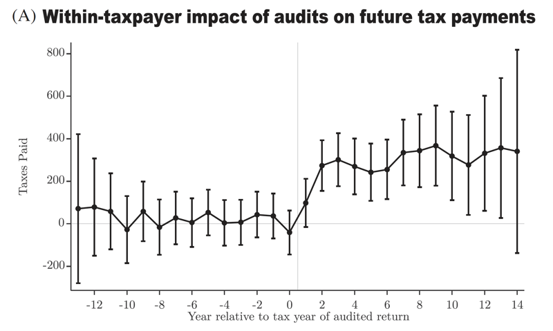

Clear Departure from Parallel Trends

Non-Random Audits
Clear pre-trend violations visible

NRP Random Audits
Flat pre-trends as expected
The non-random audit selection shows clear pre-trend violations—treated individuals were already changing their behavior before the audit occurred.
Left Panel (Non-Random Audits):
- Shows event study coefficients for operational audits selected through the IRS's normal targeting process
- The pre-period coefficients are not zero—they show a clear upward trend before the audit
- This suggests the IRS selected taxpayers who were already increasing their reported income
Right Panel (NRP Random Audits):
- Shows event study coefficients for audits randomly assigned through the National Research Program
- The pre-period coefficients are flat and near zero—exactly what we expect with random assignment
- This validates that randomization eliminates selection bias
When we see non-zero pre-trends in an event study, it tells us that the treatment and control groups were already on different trajectories before treatment occurred.
In this context:
- The IRS likely targeted taxpayers whose income was already rising
- Some of that income increase would have happened regardless of the audit
- The DID estimate attributes ALL of the post-audit income increase to the audit, overstating its true effect
Key insight: This is why we always check for parallel pre-trends in DID designs. Violations of parallel trends invalidate the counterfactual assumption underlying the entire method.